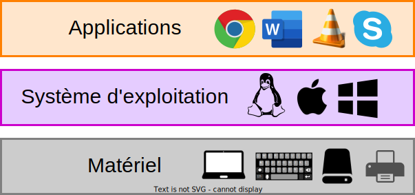

Systèmes d'exploitation
Présentation du cours
3A - Cursus Ingénieurs - Dominante Informatique et Numérique
CentraleSupelec - Université Paris-Saclay - 2025/2026
CentraleSupelec - Université Paris-Saclay - 2025/2026
Idir AIT SADOUNE

-
Docteur en Informatique diplômé par l'ENSMA en 2010.
-
Thèse sur la
modélisation et la vérification des services
par une approche basée sur le raffinement et sur la preuve.
-
Thèse sur la
modélisation et la vérification des services
-
Enseignant au sein du département informatique
de CentraleSupelec - Université Paris-Saclay. -
Chercheur membre des pôles Modèles et Preuve
du LMF - Laboratoire Méthodes Formelles.
Systèmes informatiques


Ces systèmes informatiques sont bâtis sur un modèle unique :
- une architecture matérielle
- un ensemble de périphériques
- un système d'exploitation
- des applications
Systèmes informatiques

Les grandes lignes
du programme
- Rôle des systèmes d'exploitation
- Système de fichiers
- La programmation Shell sous Unix
- Gestion des processus, des threads et la synchronisation
- Organisation et Gestion de la mémoire
Le programme détaillé
- Présentation des Systèmes d'exploitation (1 CM $\to$ $1 \times 1h30$)
- Système de fichiers (1 CM, 1 TP $\to$ $3 \times 1h30$)
- Gestion des processus sous UNIX (1 CM, 1 TD $\to$ $2 \times 1h30)$
- Introduction à la programmation Shell (1 CM, 1 TD, 1 TP $\to$ $4 \times 1h30$)
- Gestion des processus, des threads et synchronisation (2 CM, 1 TD $\to$ $3 \times 1h30$)
- Organisation de la mémoire (1 CM $\to$ $1 \times 1h30$)
- Gestion mémoire (1 CM, 1 TD $\to$ $2 \times 1h30$)
Les compétences acquises
- Comprendre le fonctionnement d'un système d'exploitation
- Résoudre des problèmes de gestion de processus concurrents
- Comprendre le fonctionnement de la mémoire
- Comprendre le fonctionnement d'un système de fichier
- Programmer à l'aide du Shell sous Unix
Organisation du cours
- Nature des enseignements
- 7 cours / 5 TD / 2 TP
- Supports du cours : EDUNAO
- Evaluation : Contrôle continu - moyenne des TPs
- Compétences
- C1.4 Spécifier, concevoir, réaliser et valider tout ou partie d'un système complexe
- C2.1 Avoir approfondi un domaine ou une discipline relatifs aux sciences fondamentales ou aux sciences de l'ingénieur.
- C6.4 Résoudre des problèmes dans une démarche de pensée computationnelle
- Questions
- Avant, pendant et après le cours
- En dehors du cours
- idir.aitsadoune@centralesupelec.fr
- MS TEAMS